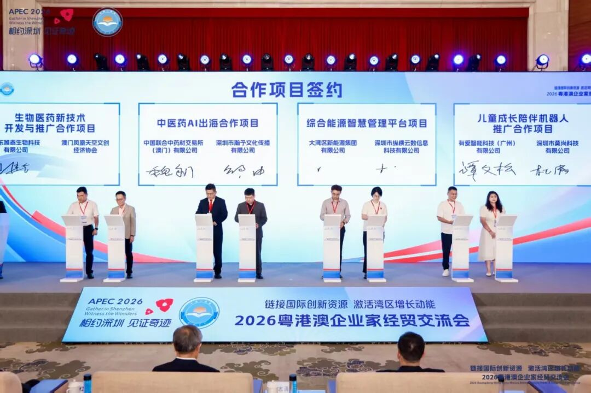
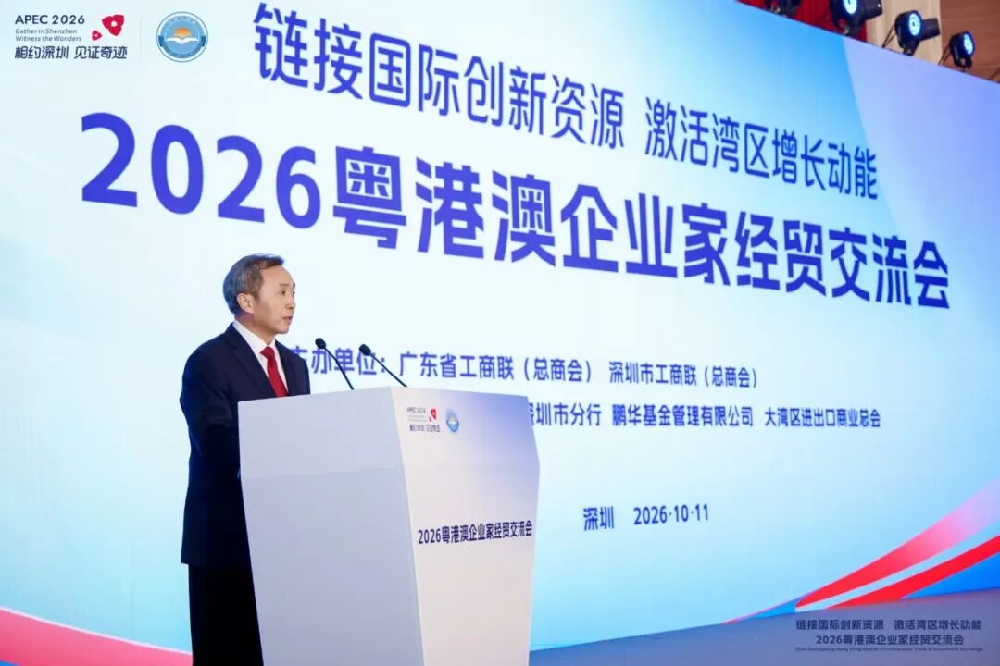
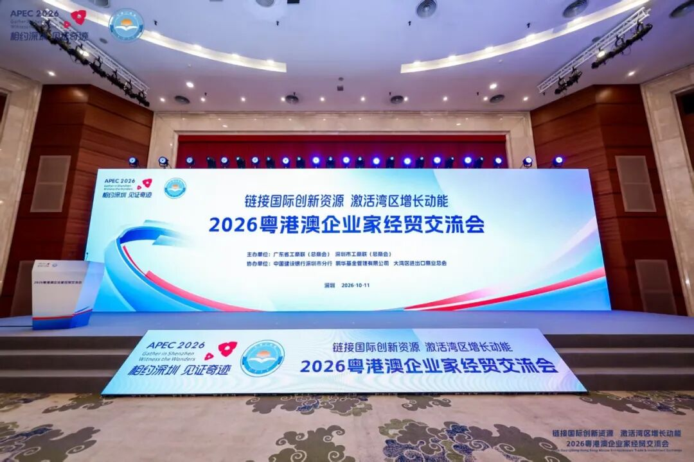
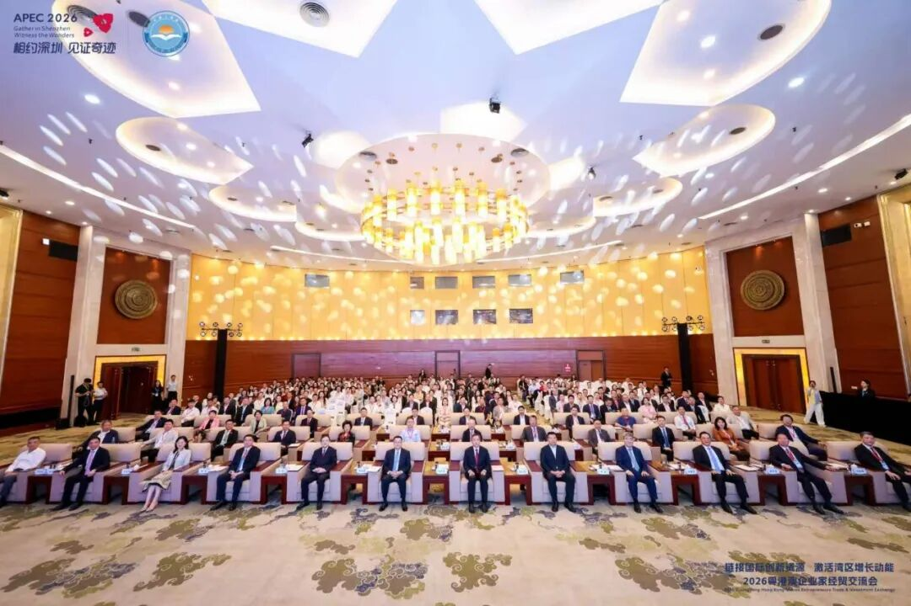

2026年10月11日，深圳。作为 APEC 2026 落地深圳的重要预热活动，2026粤港澳企业家经贸交流会在深圳举行
有爱智能科技（广州）有限公司与深圳市莫尚科技有限公司，在2026粤港澳企业家经贸交流会上正式签署「儿童成长陪伴机器人推广合作项目」。
这是有爱智能在AI儿童陪伴领域推进市场布局的重要一步。

▍合作项目签约仪式现场
签约落定：在APEC预热活动上携手共建推广体系
本届交流会集中签约环节，共有16家单位、8个粤港澳经贸合作项目现场签署合作协议，覆盖生物医药、中医药AI出海、综合能源智慧管理、儿童成长陪伴机器人等多个产业方向。有爱智能科技（广州）有限公司与深圳市莫尚科技有限公司就「儿童成长陪伴机器人推广合作项目」达成合作并正式签约。
根据合作安排，双方将围绕产品推广、渠道建设与场景落地三个层面开展协作，依托各自在产品研发与市场运营方面的资源积累，共同推进超级球球AI儿童陪伴机器人在家庭场景中的规模化应用，并逐步向更广阔的市场延伸。
有爱智能作为项目主要发起方之一，将承担产品与技术侧的核心工作，持续打磨产品的交互体验与内容体系；莫尚科技则发挥其在渠道资源与区域市场运营方面的优势，共同推动项目落地见效。
置身湾区：链接国际创新资源

▍2026粤港澳企业家经贸交流会现场
本届交流会由广东省工商联（总商会）、深圳市工商联（总商会）联合主办，以"建设亚太共同体，促进共同繁荣"为主题，是APEC 2026落地深圳的重要预热活动。会上发布了108项企业产业合作、技术对接与市场拓展需求清单，人工智能、跨境贸易为其中的重点方向。
全国政协委员、大湾区进出口商业总会会长林龙安在会上表示，大湾区企业可借助此类平台，与香港、澳门、广东的外贸中小型企业协同联动，更有效地开拓境外市场。深圳市工商联副主席、深圳信立泰药业股份有限公司董事叶宇筠表示，深圳具备研发与产业化优势，港澳在法律与服务领域优势突出，各方通过此类活动可实现更深层次的互补。
对此，有爱智能深表认同。公司认为，AI儿童陪伴产品的普及，既依赖技术成熟度，也依赖市场渠道与产业协同能力。唯有与产业链各方形成合力，技术成果才能真正转化为触达用户的优质产品。本次签约，正是基于这一判断作出的务实选择。
初心所在：让科技陪伴更有温度

▍"链接国际创新资源 激活湾区增长动能"
超级球球儿童成长陪伴机器人，是人工智能与家庭教育深度融合的产物。有爱智能自成立以来，始终聚焦儿童成长场景，产品设计的出发点，是以孩子的成长需求为中心，为家庭提供有耐心、有温度、可持续的陪伴支持——它并不替代父母的角色，而是在日常场景中，为孩子提供一个随时可以对话、可以倾诉的伙伴。
对产品品质与用户体验的坚持，是有爱智能在本次合作中的基本立场。未来，公司将与莫尚科技在推广落地过程中共同完善服务体系，让更多家庭能够便捷地了解和使用产品。
与此同时，有爱智能亦将依托大湾区的国际化平台与开放资源，稳步探索海外市场，推动超级球球AI儿童陪伴机器人走向国际，向全球用户展现中国智造的创新能力。

▍2026年10月11日，2026粤港澳企业家经贸交流会在深圳举行
感谢每一位合作伙伴与用户的信任
相约深圳，见证奇迹
APEC 2026 · 有爱智能科技（广州）有限公司
将持续专注产品，稳步前行